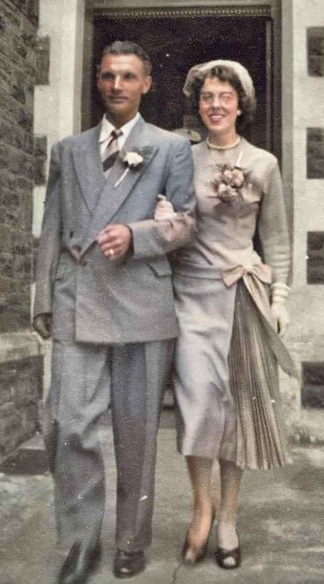
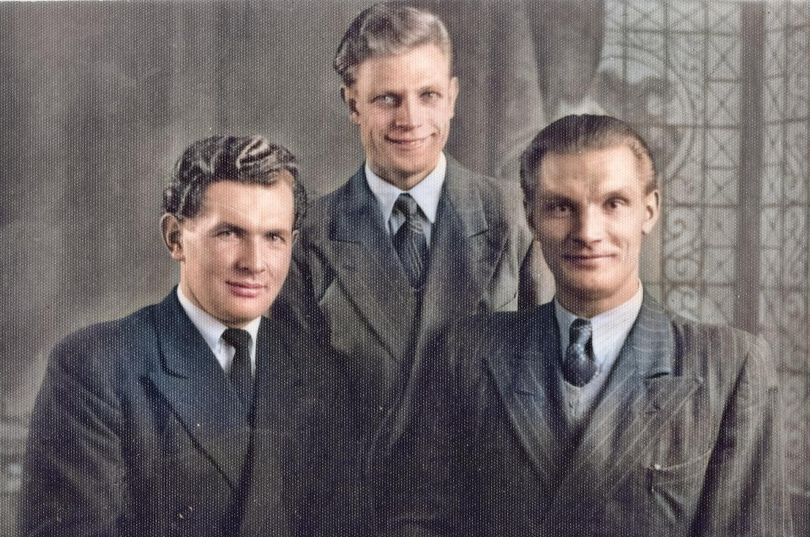
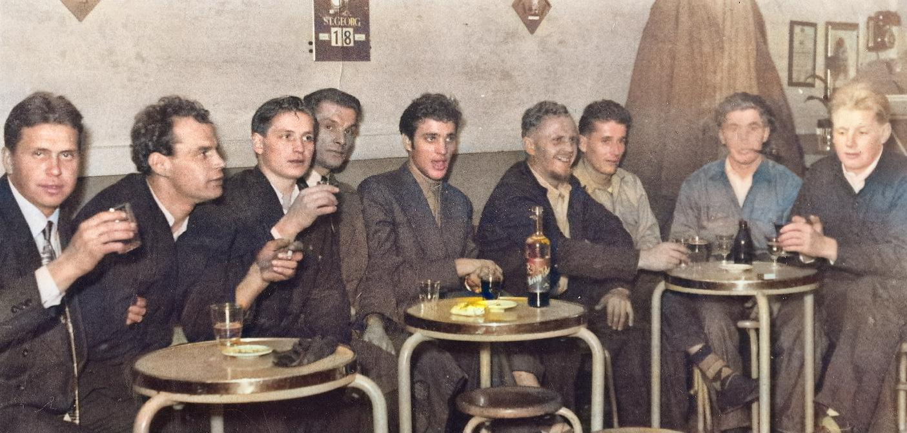

A New Start
On returning to Britain from the West Indies Albert's ship docked in Cardiff. With friends he went to the popular Penarth Pier Dance Hall where he met Rita Parker. The following week he pursued her to her parents' home in Grangetown, Cardiff.
With fine manners and pleasant demeanour he was soon accepted into the Parker family. Rita's parents' Grace and George were both pleased with the match. Albert had to go back to sea and on returning six weeks later fixed a wedding day for 26th July 1955.
They honeymooned in London taking in the sites and shows. Albert had
asked specifically to go to Soho, a red light area, and on arrival asked where the animals were? He had meant 'zoo'!


Best men were Karl and Bimbo. Bimbo was a long standing close friend and had been in the same farm in Kent years earlier.
Albert was friends with many Estonian men who like him were still homesick. Most Estonian men had found regular employment and settled down but some were badly affected by unattended PTSD, depression and an alcohol dependency.
Alfred was naturally sociable and talkative which tended to put people at ease.
With some effort he could converse in English, Polish, German, Russian, Estonian and Finnish.
Unsurprisingly he had a lot of friends including seamen, work-mates and fellow Estonians, like him stranded.
In the late 50s and early 60s Albert enjoyed being part of the Estonian community at the Estonian Club in Charles Street, Cardiff, reminiscing against a background of evocative folk music.


After years of not being able to contact family this photograph of Rita and Albert with 2 year old daughter Julia Alide, managed to reach Vassili and Salme in Estonia (1958).
Reconnection came as a huge relief but proved very emotional.
Vassili was said to be overcome with the knowledge that Albert, assumed dead, was very much alive and well. Salme observed that Vassili kept the image by his bed. He died on the last day of 1958.
Helga Maria
and Aleksandr Vassili were born in 1959 and 1966 respectively and completed Albert's family of five.